RTR: Imperium Surrectum
RTR: Imperium SurrectumThe Illyrians
2024-03-03 · jottel

Welcome to our new RIS dev diary. Today we will present to you the Illyrians that have been redone for the new patch.
We will begin with the Illyrian Kingdom. This kingdom is ruled by the Taulantian dynasty under king Mytilos, son of Monounios. Their territory stretches from the major Illyrian city of Lissos in the north, over the Greek city of Epidamnos and its Taulantian hinterland to the west, the Dassaretis to the east, and the Parthinoi in the south. The Taulantioi are one of the oldest Illyrian peoples, already mentioned by Hekataios, inhabiting their homeland since at least the 7th century BC. During that time, they helped the Korkyraians during the foundation of the city of Epidamnos, which they defended against the Liburnians, who were ruling the northern and eastern parts of the Adriatic Sea.
The Illyrian Kingdom was born out of the rulership of the Taulantian king Glaukias, a contemporary of Alexander the Great. Though Philip II of Macedon had conquered Illyria, the two kings Glaukias and Kleitos, son of Bardylis, revolted upon Philip’s death in 335 BC. Alexander besieged Kleitos at the Dassaretian fortress Pelion and defeated him and the reinforcing Glaukias in battle. Though Kleitos survived, he lost his rulership over the Dassaretis and went into exile in the Taulantian kingdom. King Glaukias, though he lost the battle, still managed to secure his position in the region. He stayed in power for quite some time, even after his defeat, demonstrating the backing he must have had in his homeland. During his continued rule that lasted for at least another 30 years, he protected the young Pyrrhos of Epeiros in 317 BC from Kassander, helped the cities of Apollonia and Epidamnos to defend themselves against the same, and put Pyrrhos on the Molossian throne in 306 BC. Despite Pyrrhos’ alliance with Glaukias, the latter’s expansion into Southern Illyria and annexation of Apollonia came at the cost of the Taulantian kingdom. His upbringing in the Illyrian court and his fourth wife, the Illyrian princess Birkenna, daughter of King Bardylis II (perhaps the son of Kleitos), may have given him a claim on parts of Illyria. Epeirote rulership in Illyria did not last, however, and several conquests of Pyrrhos were lost upon his death. The security of the Taulantian reign is demonstrated by Glaukias’ successor Monounios, the first Illyrian king to mint his own coins, which he did in Epidamnos itself. An Illyro-Hellenistic helmet with an inscription of his name was found at the royal tomb of Selca e Poshtme, near Lake Ohrid in the Dassaretis, demonstrating at least influence over the former territory of Kleitos.
Both Monounios and his successor Mytilos were heavily involved in the dynastic struggles of Epeiros and Macedon. Monounios fought against Ptolemy Keraunos on the side of Ptolemy, son of Lysimachos, and Mytilos, who continued minting coins at Epidamnos, was at war with Alexander, the son of Pyrrhos of Epeiros. In 270 BC, when the RIS campaign starts, the kingdom was still at odds with Epeiros, but also remained the most powerful state in Illyria. Eventually, the territory of the kingdom might have fallen under the rule of the Ardiaei and subsequent Illyrian rulers. After the Third Illyrian War between the Romans and the Labeataians under Genthios, the Taulantoi, among other Roman allies, were granted independence and freedom from tribute, whereafter they lost all major political significance in the new Roman Illyria.
Silver stater of King Monounios, 10.56 gr, Dyrrhachion mint. Cow and suckling calf.Rev. Double stellate pattern, inscription ΜΟΝΟΥΝΙΟΥ ΒΑΣΙΛΕΩΣ
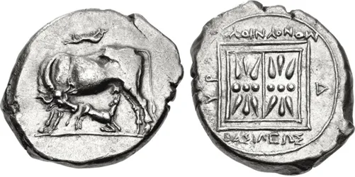
The "Monounios" helmet
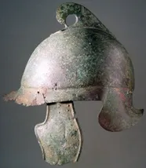
Gradistë belt plate from Lake Ohrid.
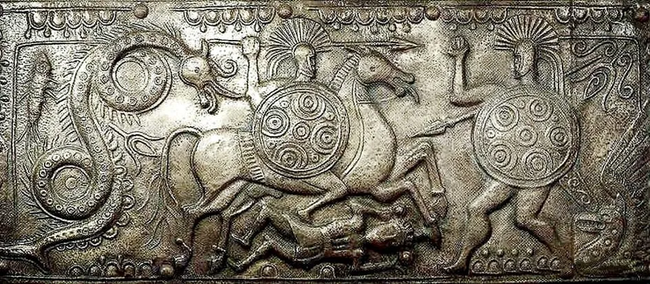
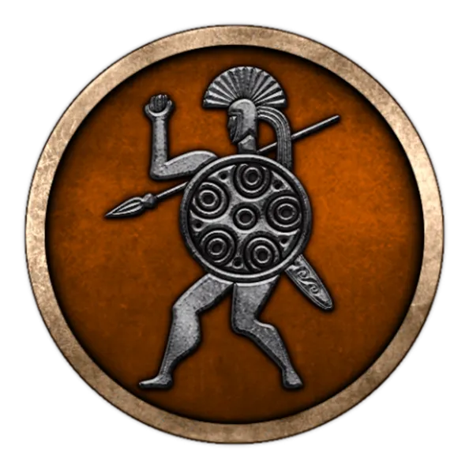
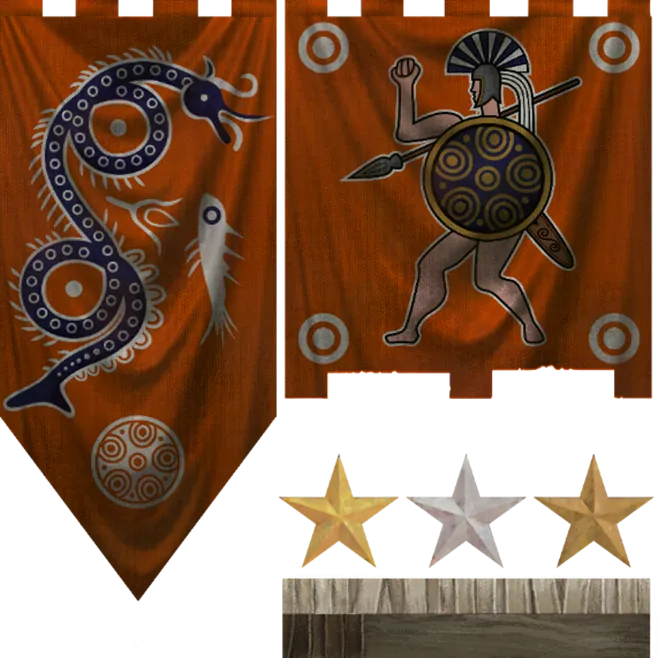
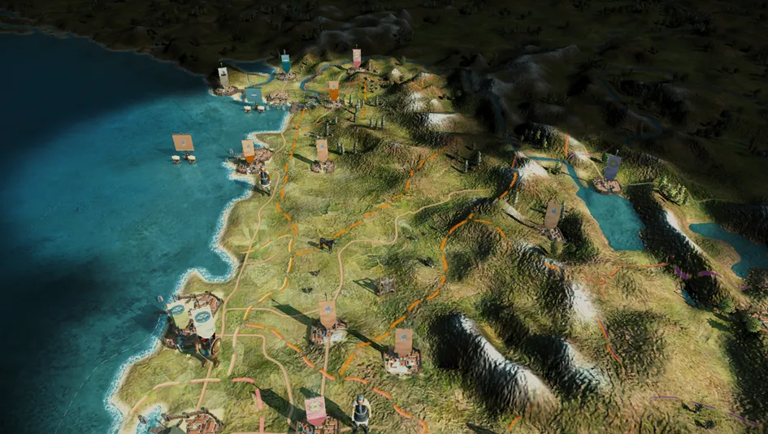
Southern Illyrian Spearmen
Illyrian Noble Spearmen
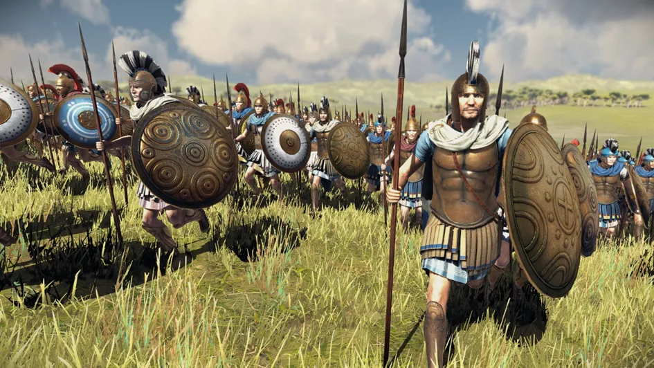
Illyrian Epilektoi: This reform unit was sent by Demetrios of Pharos to his ally Philip V of Macedon. They served as assault units, often working in tandem with the Macedonian peltasts. Rome’s involvement on the eastern Adriatic coast, in Issa, Korkyra, and Apollonia, has had its effect on the armament of these units, who are armed with traded (or looted) Montefortino helmets that were slowly spreading throughout the Mediterranean.
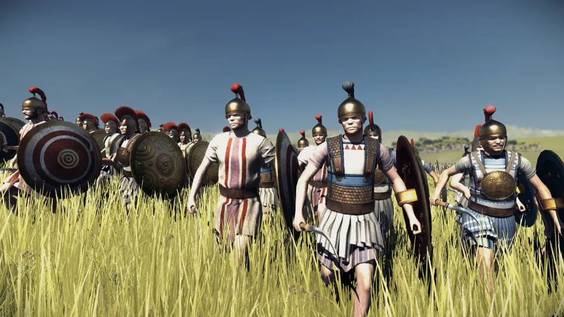
Illyrian Skirmishers
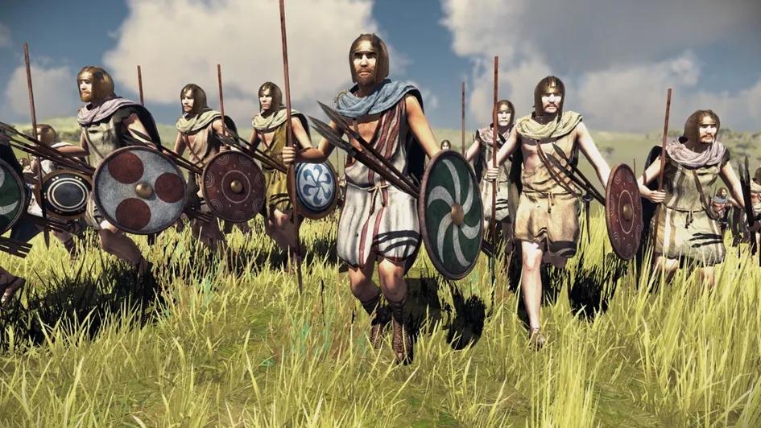
Southern Illyrian Noble Cavalry
Illyrian Cavalry
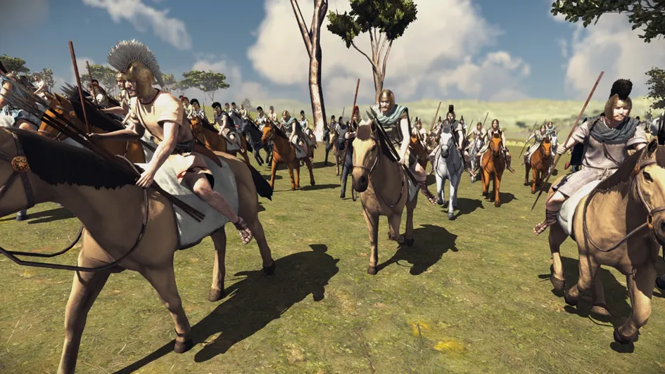
Next, we will show you the redone Ardiaei. Though they already existed in RIS, their starting position has been completely revised – and, in effect, strengthened. Several new settlements in the hinterland of the Naro River demonstrate their origins as neighbours and rivals of the Autariatai, who they fought over the salt springs in the territory of the Narensioi. Furthermore, the settlement of Nestos shows their expansion into the coast opposite of the Dalmatian islands settled by the Greeks. The downfall of the Autariatai during the Celtic invasion of the 4th century BC led to the rise of the Ardiaei and their conquest of the Dalmatian coast and the Rhizonic Gulf under King Pleuratos, the father of the famous king Agron and Ardiaeian faction leader in RIS. Access to the Adriatic through the many rivers and protected gulfs of the eastern Adriatic allowed the Ardiaei to not only engage in trade, but also in piracy and overseas expansion. King Agron eventually added the territory of the old Illyrian Kingdom to his growing realm, making himself the supreme ruler of Illyria. In 232 BC, the Ardiaei under Agron helped out the Akarnanian city of Medion against the Aitolians, whose light infantry and cavalry was quickly routed by the disciplined heavy Illyrian infantry. The subsequent naval battle against the Atiolians and Achaians was an easy victory for the Ardiaei, who thus established their naval supremacy over the eastern Adriatic.
Only Roman intervention against Queen Teuta, wife and successor of Agron (who had, unfortunately, passed away at the Medion victory party- drink responsibly, kids), whose aggression against the Greek city state of Issa and assassination of a Roman ambassador had provoked the senate, finally put a halt to Ardiaeian expansion. The ceasefire agreement forbade the Illyrians to sail south of Lissos with more than two military vessels, which crippled their ability to conduct raids in Epeiros, Akarnania, and the Peloponnese (though if this clause is not just a later Roman invention is still up for debate). The dynasty found its end with the minor Pinnes, the son of Agron, who had followed a pro-Roman policy, but died before he reached drinking age (doh!). The rogue self-made man Demetrios of Pharos, who had betrayed Teuta to the Romans, soon thereafter tried to annex the Ardiaeian realm during his short reign. After he, too, faced a Roman invasion, the Labeataian commander Skerdilaidas, one of his allies and generals, eventually managed to found a dynasty on the territory of the Ardiaeian kingdom thanks to his alliance to the Romans, continuing to secure their interests in the region, like Pinnes had before him.
In line with the new Illyrian factions, we gave the Ardiaei a new symbol, based on coins minted in the city of Rhizon, probably the capital of Teuta.
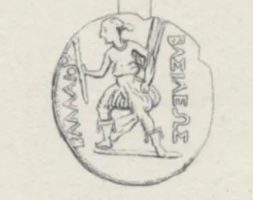
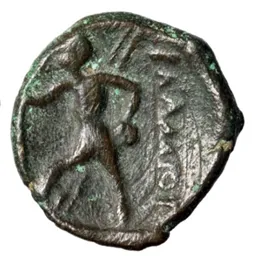
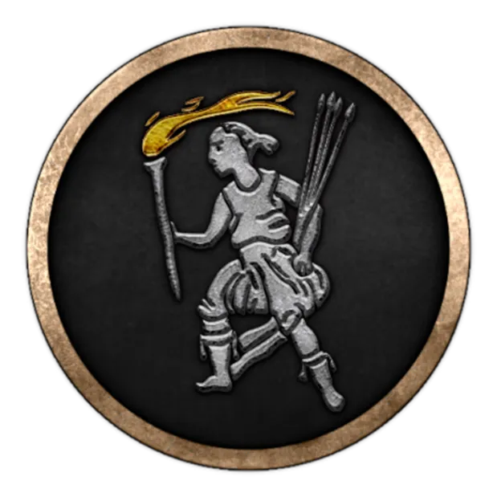
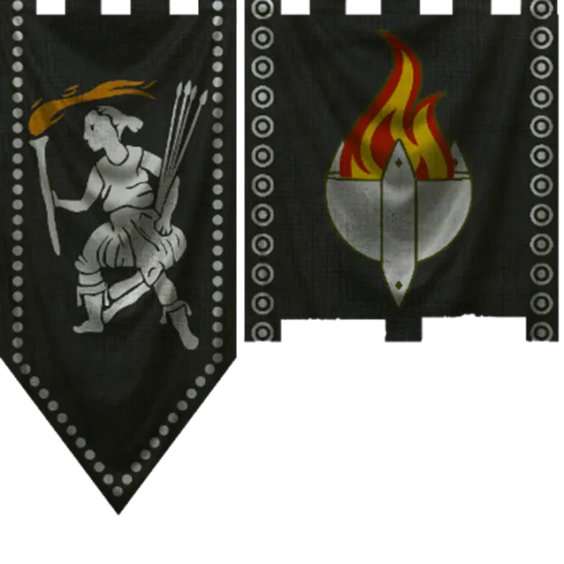
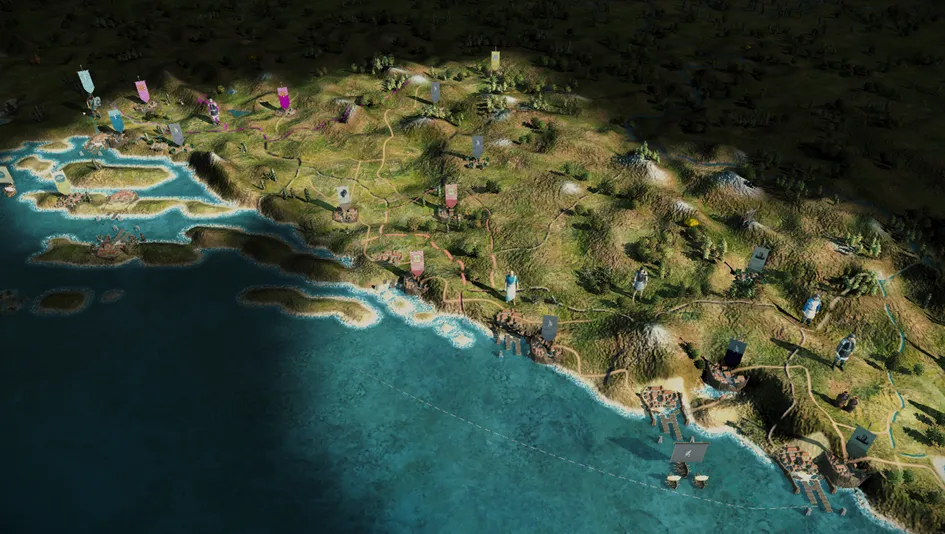
Illyrian Slave Javelinmen: The Ardiaei had a huge slave population which they levied for their own armies. Those we represented as light infantry
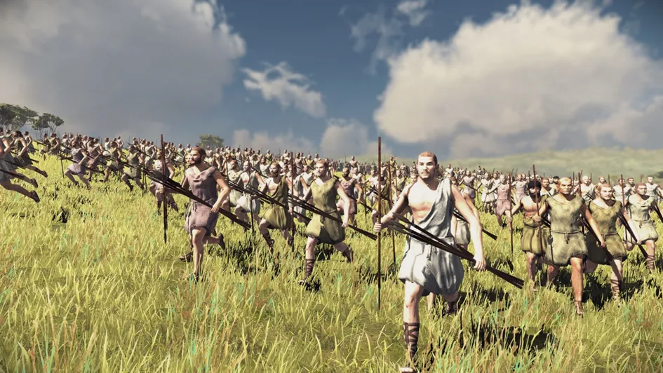
Illyrian Slave Slingers
After what we have already said it should be no surprise that we next come to the Labeataian Kingdom. The realm emerged from the many smaller Illyrian tribes who inhabited Lake Labeatis, modern Lake Skhodra. The lake is likely what gave this kingdom its name. It gained notoriety under Skerdilaidas, the Illyrian commander of Teuta and Demetrios. He was a former ally of the Macedonian king Philip V, but betrayed him when the greedy Macedonian king would not give him his rightful share of the booty from a mutual campaign. When the Antigonid army suddenly rocked up on the shores of Illyria, Skerdialidas sought the support of Rome, Aitolia and, finally, his erstwhile enemy Dardania. Their joint campaigns led to the reconquest of some southern Illyrian holdings and the territory of the kingdom steadily expanded under his son Pleuratos and his grandson Genthios.
The Labeatai also inherited part of the realm of the Ardiaioi after Demetrios of Pharos had been defeated. They thus ruled over a territory stretching from the Dalmatian coast to Lissos and had their capital at Skodra near Lake Labeatis. The pro-Roman policy in Illyria, which began with the Ardiaeian ruler Pinnes, was picked up again by Skerdilaidas when he allied with the Romans against Macedon and was continued by his son Pleuratos III. Pleuratos’ son Genthios, “the last Illyrian king”, though eventually allied to Rome’s enemy Perseus of Macedon, probably to expand his influence at the cost of the many smaller Illyrian allies of Rome. But this was the step that doomed his Illyrian kingdom. He built up an army of 15.000 men and 270 ships at Lissos and attacked Roman allies in Illyria. His campaign failed, however, and after just 20 or 30 days, he surrendered. He and his family were imprisoned, his fleet of lemboi confiscated, and his realm partitioned. Independence and immunity from tribute were granted to the Greeks and Illyrians in the area who were allies of Rome or had quickly switched sides, before the war was over, like Issa, Rhizon, Oulkinion, the Daorsoi, Peirustai, Taulantoi, and Dassaretai. The other Illyrians were severely punished and plundered. This war marked the end of independent rulership in southern Illyria.
The Labeatai are represented by the ship symbols on the coins minted in their territory. Like for most Illyrians, ship building and seafaring was of high importance to them.
1) A bronze coin bearing the legend ΛΑΒΙΑΤΑΝ (LABIATAN) and depicting an Illyrian lembus 2) A bronze coin bearing the legend ΣΚΟΔΡΙΝΩΝ, minted in Skodra.
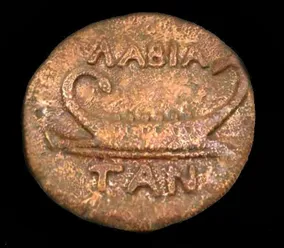
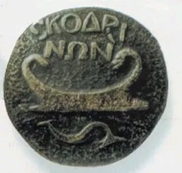
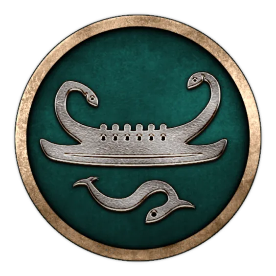
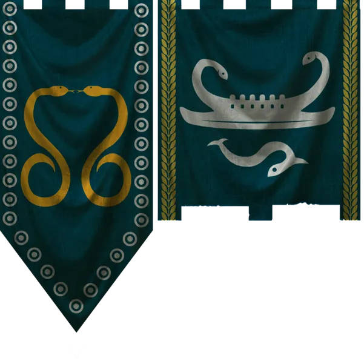
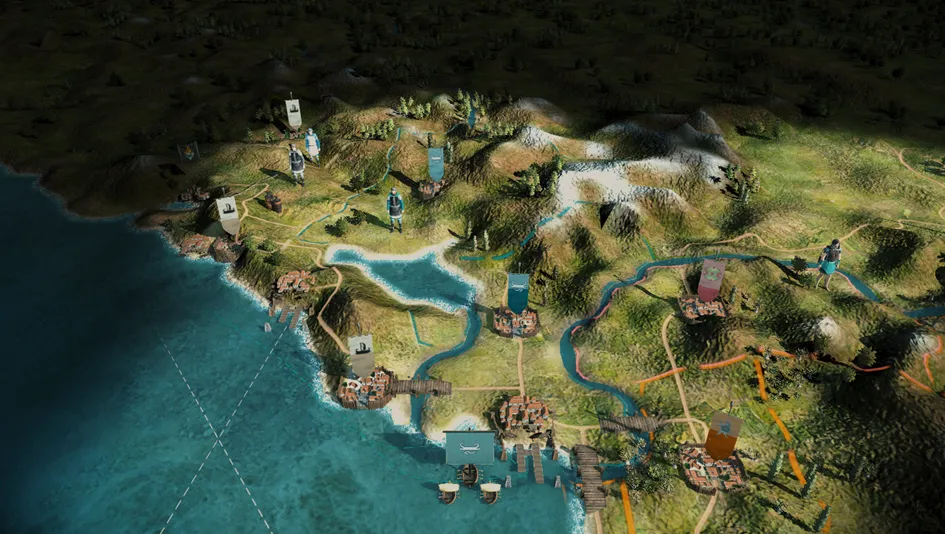
Labeataean Infantry
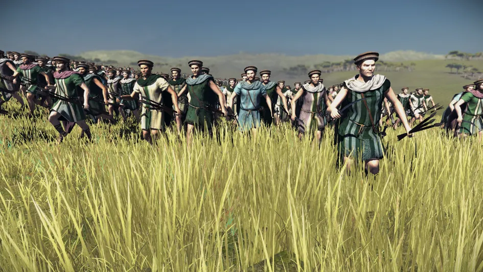
A belt plate finding from Lake Labeatis, showing Celts marching to the left, also inspired two new units, Celts employed in Illyrian service and thus inspiring a change of equipment for the Labeataeans:
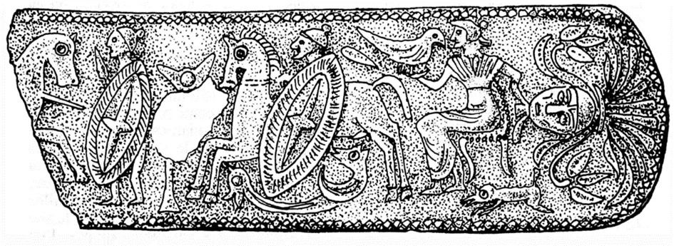
Illyrian Thureophoroi Cavalry
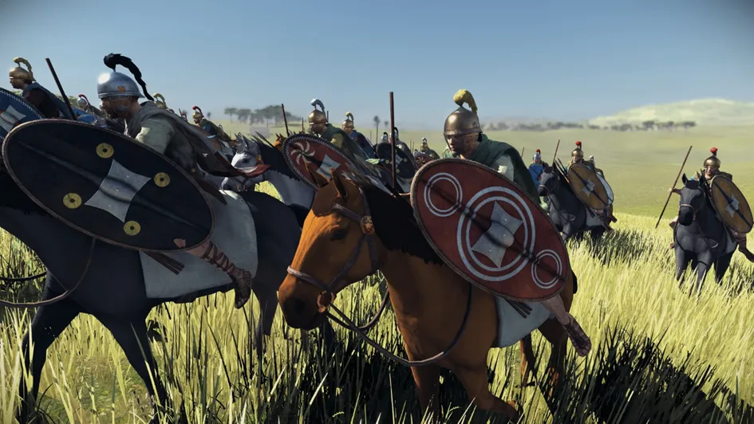
Labeataean Thureophoroi
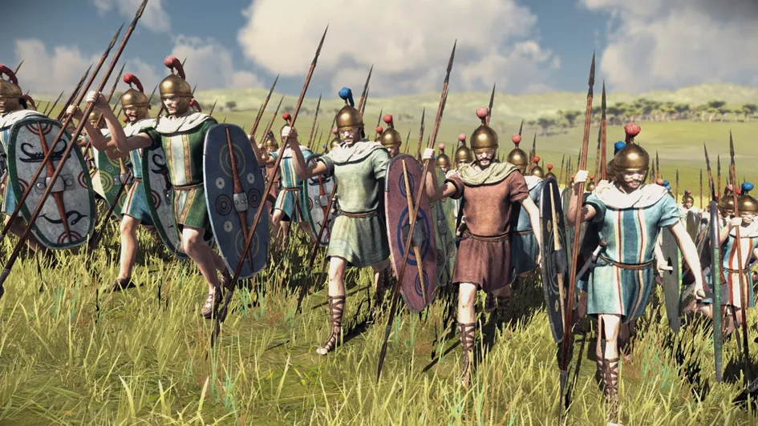
The Dardanian Kingdom lies between Paionia to the south, Illyria to the west, the Skordiskoi to the north, and the Triballoi to the east. They first appear as neighbours to the Macedonians after the conquest of Paionia by Philip II, though hillforts and terraces have been found in their territory that can be dated as early as the 7th century BC. In 354 BC king Philip II of Macedon subdued them, though he likely had no interest in occupying their territory so far to the north, which is why they stayed relatively independent. In contrast to the Illyrian kings Kleitos and Glaukias, the Dardanians decided to keep a low-profile during Alexander’s succession and invasion of Persia. Unlike their Paionians and Thracian neighbours, the Dardanians thus avoided Macedonian invasions and occupations and even offered asylum to the Paionian prince Ariston, after his realm had been conquered by Lysimachos in 284 BC.
With the death of Lysimachos in 281 BC, Seleukos claimed his lands in Thrace, but was in turn murdered by Ptolemy Keraunos. His death was followed by the collapse of the Macedonian reign in Thrace as well as a civil war between Keraunos, Antigonos Gonatas, Pyrrhos of Epeiros and others. During these turbulent times, large Celtic invasion armies under Bolgios, Brennos, and Kambaulos advanced into the lands of the disintegrating remains of the Macedonian-Thracian realm and into Dardania, Triballia, Paionia, Macedon, and Greece, where they headed for the sanctuary of Delphi. This invasion was an existential threat to the many tribes and kingdoms in the Balkans. The Dardanians, either hoping to benefit from an alliance to the new Macedonian king, or fearing for their own independence, offered 20.000 soldiers to Ptolemy Keraunos, who rudely refused the offer and then died in battle against the Celtic invaders. After the Celts had been beaten in Greece, the stragglers of at least one army were finished off during their retreat through Dardania. The kingdom had survived the invasion relatively unscathed. The Autariatai, the former hegemons in Illyria, were annexed by the Skordiskoi, the Triballoi were beaten into near irrelevance, and Antigonos Gonatas had to stabilise his realm, concentrating on Pyrrhos and the rebellious Greeks. Thus, in the shadow of the Antigonid Kingdom, the Dardanians were able to expand into Paionia, making the polis of Skoupoi one of their main cities, and eventually captured Bylazora in 230 BC under their king Longaros.
Perhaps only a year later, the Antigonid king Demetrios II tried to fend off the Dardanians in Northern Macedon but lost the battle and died shortly thereafter. During the next three decades, the Dardanians continued to raid into Macedon every time the royal army was away. Their economy, which was heavily relying on slavery, has been compared to the Spartan helot system, and massively profited off the plunder and slaves taken from Macedon. In the 210s BC, the Dardanians managed to make more than 20.000 Macedonian slaves in one raid. Several settlements located in the Dardanian plains have been excavated that were founded in the Hellenistic era. This is perhaps pointing towards a unification of the Dardanian tribes and an increasing mutual trust, leading to the Dardanians leaving their hillforts in favour of joint, larger urban settlements.
Their opposition to the Macedonians brought them into an alliance with the Romans during the Second Macedonian War (200-197 BC). Their king Bato cooperated with the Labeato-Illyrian king Skerdilaidas, exploiting the weakened border region of the Dassaretis to make incursions into Macedon. To stop their continued invasions, Philip V later invited the Germano-Celtic Bastarnai, who had recently crossed the Danube, to attack and conquer Dardania. Though the Bastarnai had initial success, they were eventually evicted from the kingdom and most of them drowned when they tried to cross the frozen Danube. Yet, the invasion left Dardania in a weakened state and from then on, their decline began. Like they once exploited a weakened Paionia, the Skordiskoi now expanded into their territory. In the 1st century BC, the Dardanians, together with the Skordiskoi and Maidoi, eventually started raiding Macedon again, now under Roman rule. Dardania was finally conquered by the Romans in 28 BC, their territory made part of the province of Moesia in the 1st century AD, until it became a separate province with its capital at Naissus (modern Niš).
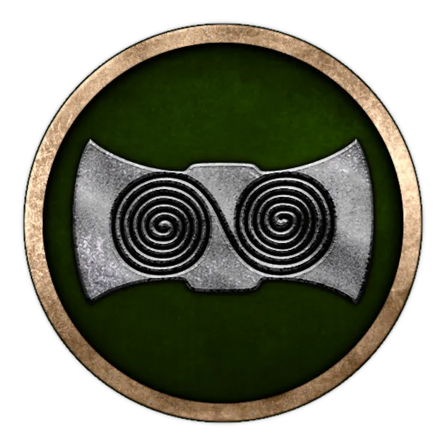
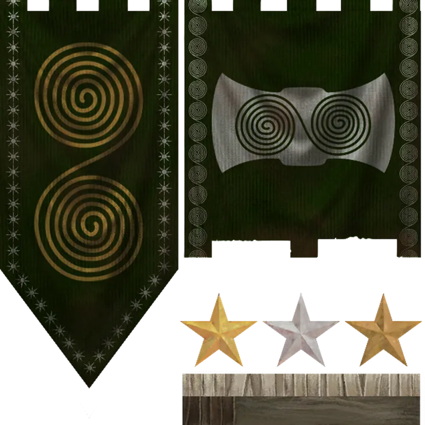
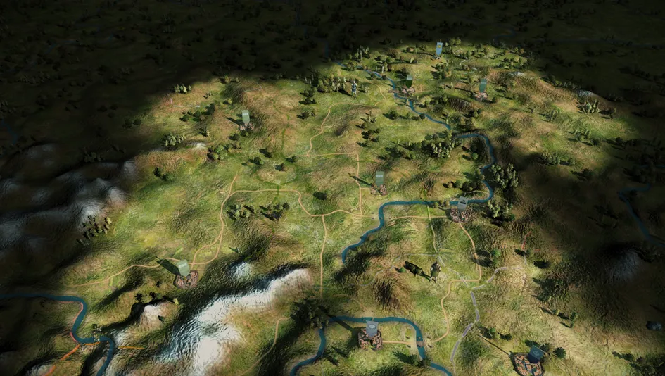
Dardanian Spearmen
Dardanian Noble Spearmen
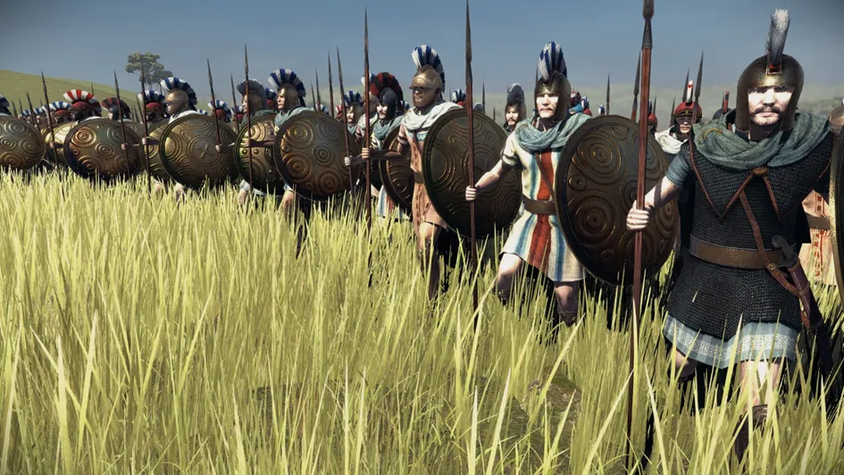
Dardanian Pikemen: This unit is based on an inscription of a dedication that was found in the acropolis of Lindos. Philip of Macedon (likely Philip V) gifted 10 helmets, 10 peltai, and 10 sarissai for his victory over the Dardanians and a foe, whose name is harder to decipher. We don’t know much about the Dardanian military, though what can be seen again and again is the discipline of their strong infantry formation. After one raid, despite being outmatched by Philip’s cavalry and having quite a few wounded, they retreated in such good order that no Dardanian was taken prisoner. This unit is more speculative than the others, but it can be unlocked via reform as a reward, if the Dardanians manage to take Macedon 😉
Dardanian Light Cavalry
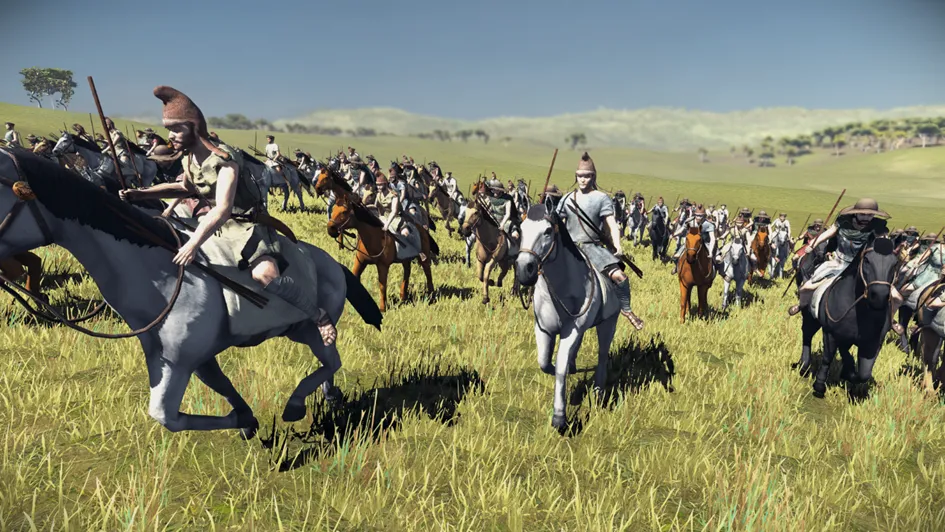
For our next faction we move back to the coast, towards the Delmatae. The Delmatae are a tribe occupying the eastern Adriatic coast and its hinterland, which was eventually named after them. Their capital Delmium/Delminium, which in turn gave the Delmatae their name, is located behind the Adrion Mountain, pointing towards an origin as a minor landlocked power. Already by the late 4th and early 3rd centuries BC though, they had conquered the local coastal tribes of the Hyllioi, Boulinoi and Nestoi. Somewhere around the same time, they must have fallen under the rulership of the Ardiaei, where they remained until their independence in the 2nd century BC. According to Strabo, they didn’t use money and redistributed their arable land every 7 years, perhaps as a form of religious purification, or to avoid conflicts between their clans over pasture grounds. In the sources, they are first attested by Polybios for the year 181 BC, as subjects to the Labeataian king Pleuratos III. After his death, the Delmatae revolted from the Illyrians and attacked the mainland holdings of Issa at Tragourion and Epetion. Additional complaints by the Daorsoi, a major Illyrian tribe and ally of Rome, located on the other side of the Naro river, finally pulled the Romans into the area. In the First Dalmatian War (156-155 BC) the Romans defeated the Delmatae and looted their capital Delminium, though wars between the two powers would continue to erupt repeatedly for the next one and a half centuries, with especially disastrous battles for the Romans during Caesar’s civil war in 48 BC. They were finally subdued by Octavian in 33 BC, but rose up again during the Great Illyrian Revolt in 6 AD that was put down with the surrender of the Daesitiates in 9 AD.
Several dozen pre-Roman hillforts have been identified in southern Croatia and Bosnia-Herzegovina, which seem to have been mainly erected by the Delmatae as a defensive network against the neighbouring Liburnians. In 48 BC, the Romans intervened on behalf of the Liburnians against Delmatian incursions directed towards the town of Promona. The archaeological site of the fort at Promona though points towards a Delmatae construction style as opposed to a Liburnian one, indicating that in a previous unknown conflict the Liburnians might have successfully expanded into Delmatian territory. Archaeologically the Delmatae are hard to grasp as a culture, showing some traces of Illyrian, but mainly of Pannonian influence. Their interaction with the local Greeks and Hellenised Illyrians was an antagonistic one, showing resistance to adoption of Greek customs, even something like drinking wine. Their unification likely took place during the 3rd century BC and was – at least partly – marked by a strong anti-Mediterranean sentiment. Banding together, regularly redistributing the land and not making use of (Greek) coinage and wine was an expression of that identity formation.
The Romans later named the land the Delmatae inhabited after them: Dalmatia. After the Delmatae were conquered and their revolts subdued, Dalmatia served Rome as a mass recruiting ground for their auxiliary cohorts and alae, who saw action in many major conflicts of the Roman Empire. They just never stopped loving war.
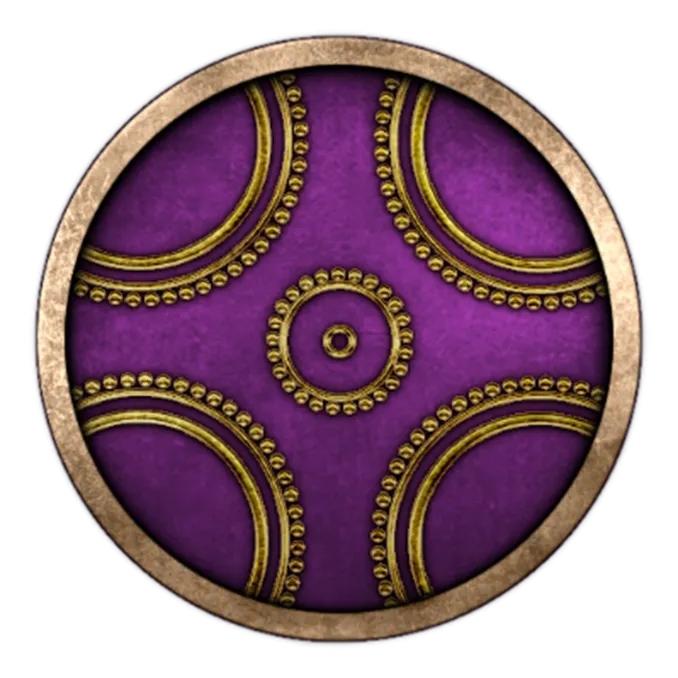
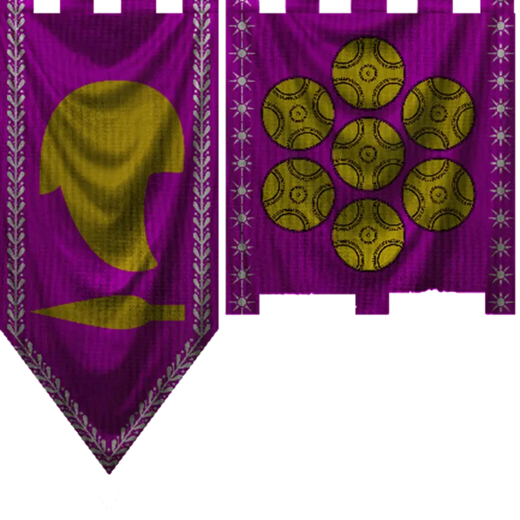
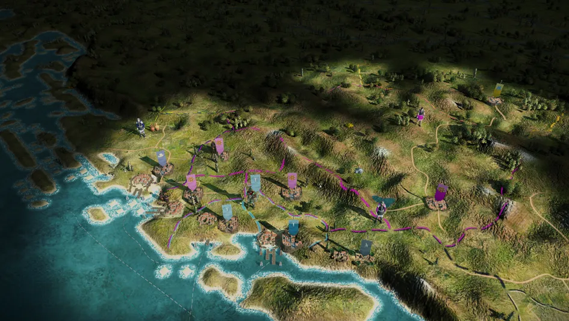
Northern Illyrian Bodyguard
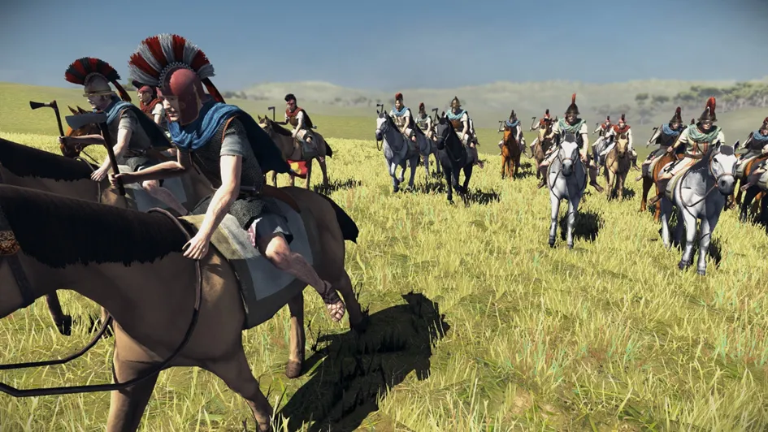
Northern Illyrian Spearmen
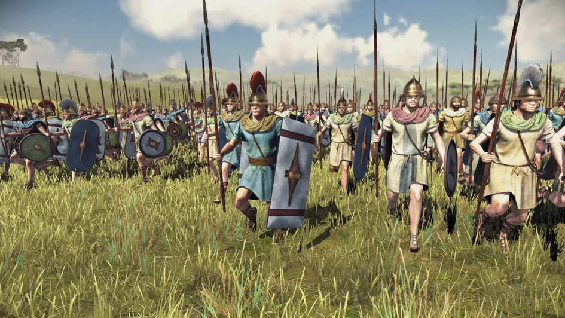
Dalmatian Thureophoroi
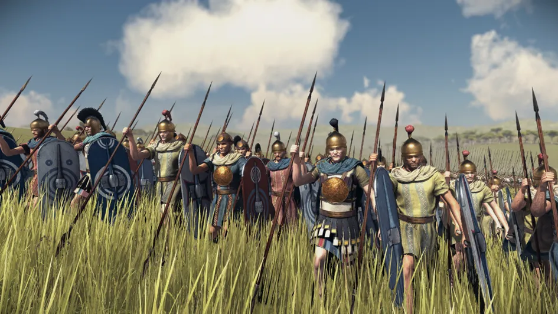
Dalmatian Footmen
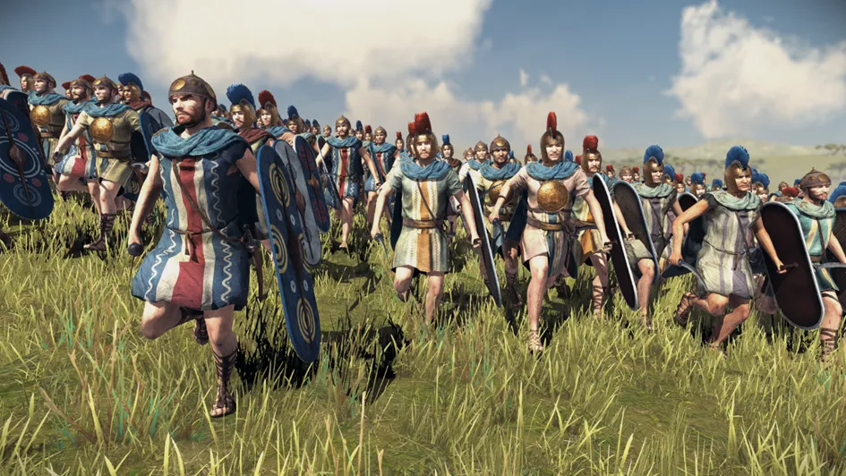
Next, we will continue with a perhaps more unknown tribe, the Daesitiates. In 270 BC, they inhabit the southwestern part of Pannonia behind the Delmatae. This position probably led to relatively late contacts with the Romans, who presumably fought the Daesitiates for the first time in 35 BC under Augustus, while Tiberius fought additional wars in Dalmatia and Pannonia from 14 to 8 BC. Initially, they may have been part of the large Autariatai tribe confederation in the 4th century BC, before it broke down under the pressure of the Celts, who had wandered through and occupied large parts of Pannonia and Illyria. The Daesitiates gained notoriety especially through their leader Bato, in the Great Illyrian Revolt (6-9 AD). According to Velleius Paterculus, who participated in the war, the rebellion counted around 800.000 people, with a fighting force of 200.000 infantry and 9.000 cavalry, experienced commanders who were versed in Latin, disciplined troops, and thought-out strategies to invade Roman territory. Whatever the true numbers of fighters, Rome’s response makes such a high count not unreasonable: 10 legions, more than 70 cohorts, ten alae, over 10.000 veterans. The conflict was of such magnitude that it took Rome’s entire attention away of Maroboduus in Germania, who the Romans wanted to operate against at first. In the revolt, the Daesitiates were the first to rise up in opposition to Rome though infighting, hunger, and Rome’s military response spooked most Pannonians and Dalmatians into a quick surrender. The Daesitiates were among the last to surrender. Along with the Breuci, they were perceived as the most powerful and warlike Pannonian peoples, though archaeologically, their identity as Pannonians is far from clear. Their geographic position though has been somewhat confirmed by gravestone inscriptions of Daesitiatian soldiers in the Roman army, with their main settlement of Hedum perhaps being located in Breza (Bosnia-Herzegovina).
Not much else is known about the Daesitiates, though we wanted to represent the (Illyro-) Pannonian peoples through their presence. The inspiration for their symbol came from a stone relief found somewhat close to their territory depicting armed riders with swords – which has also given rise to a special unit.
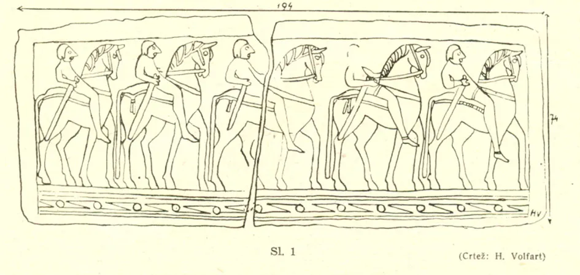
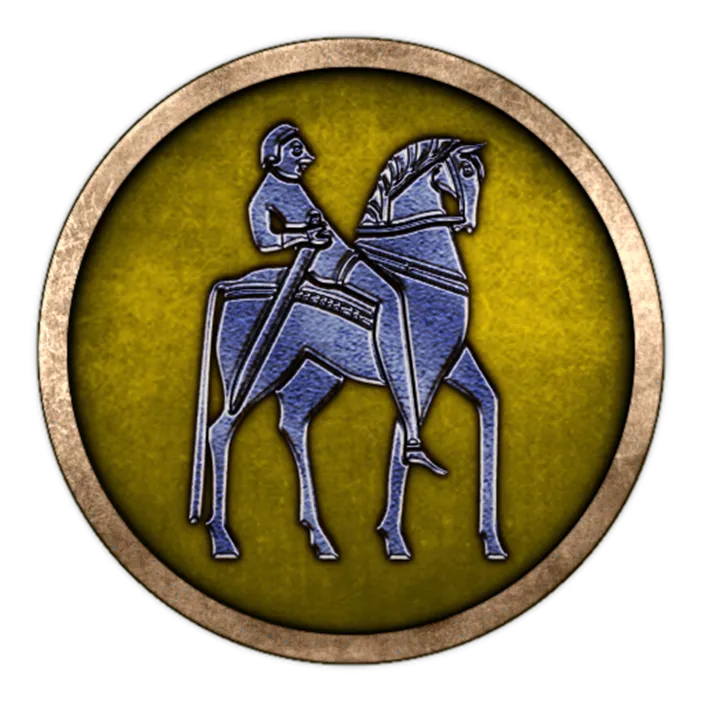
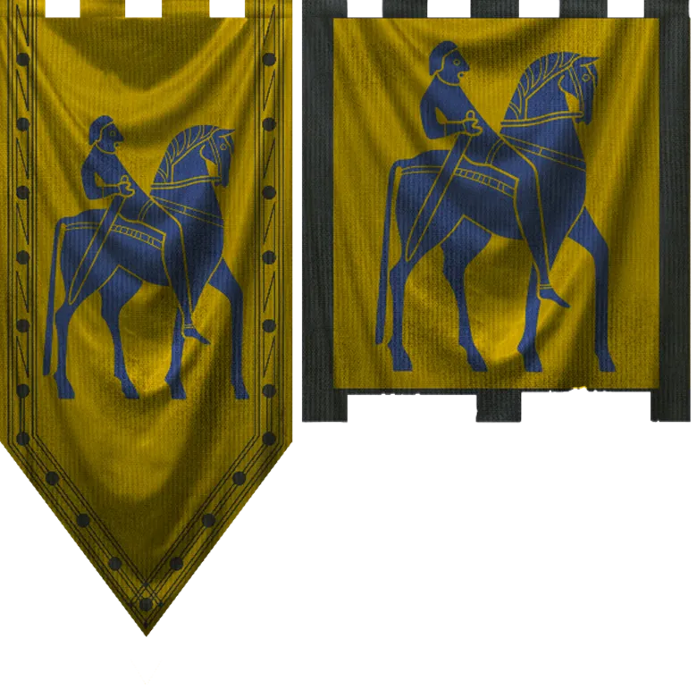
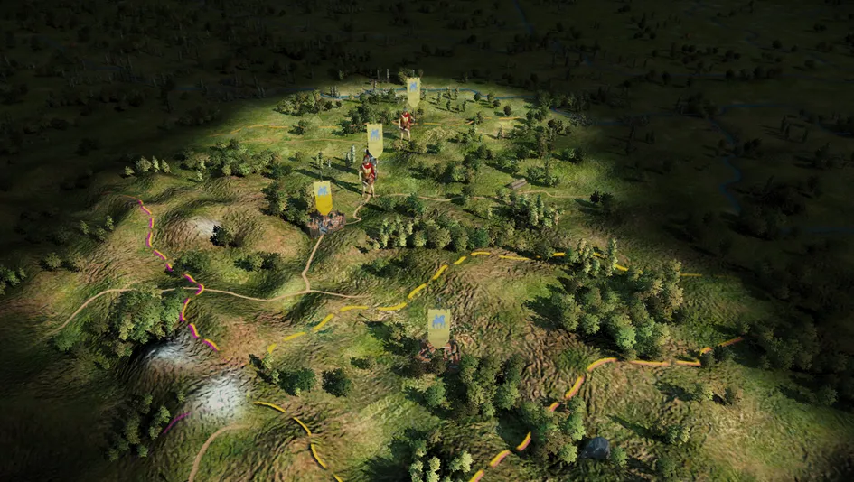
Daesitiates Cavalry
Going further northwest, we come across the Iapodes. They have often been erroneously classified as Illyrians, mainly by the Romans, though they were probably a Indo-European group, whose existence is already attested in the 9th/8th centuries BC. They resided in the valleys of the Una River where an Iapodian sanctuary has been excavated, and in today’s Lika and Gorski Kotar in modern Croatia. Their tribes were the Monetini, Avendeati, and Asupini, their known cities were Montium, Avendo, Arupium, Terponos, Poesni and Metulum, which was their largest city until the Illyrian War of the early 1st century BC.
In the course of the third century BC, they extended their influence in the northern Adriatic and expanded towards the coast at the expense of the Liburnians. The many Iapodian artefacts that have been found make it relatively easy to pinpoint their influence in the area, which extended from the Kvarner bay in to the Telavius river. The Iapodes are attested in the broad region of Tarsatica (Rijeka) at the end of the third century BC, though they lost most of their possessions in the Liburnian littoral at the end of the second century BC, when the Romans went to war against them. Their initial relationship with the Romans at the beginning of the 2nd century BC must have been on somewhat friendly terms as they complained to the senate in 171 BC, when the Roman consul Gaius Cassius Longinus plundered his way through their territory on his way back from Macedon. The relations soured over time, however, since in 129 BC Gaius Sempronius Tuditanus unsuccessfully campaigned against them and several minor Roman campaigns followed. They were finally subjugated in 35/34 BC by Augustus, who took their major towns and destroyed their capital Metulum. These towns later flourished under Roman rule, and Metulum even became a Roman municipium.
The Iapodes mostly developed their own local culture, though not completely without outside influences. Trade with the Greeks from the Aegean and the peoples of the Italic peninsula existed already in the 6th/5th century BC. Traces of the Iapodian material culture has been preserved thanks to their stone urns, one of which also served as an inspiration for their faction symbol and banner. Strabo asserts that the Iapodes were influenced by the Celts and although La Tène items don’t seem to have penetrated very deeply into Iapodian territory or culture, we decided to show at least some military influence in their armour.
Stone urn from Ribić, 5th to 4th century BC
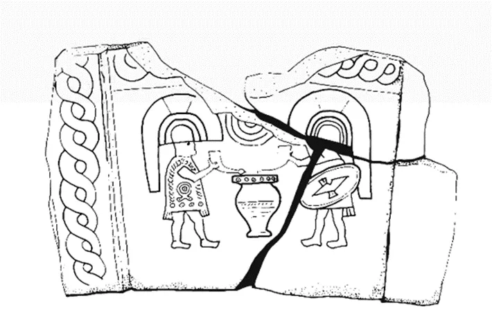
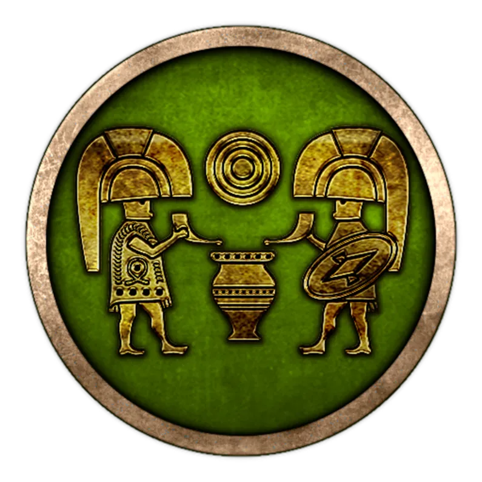
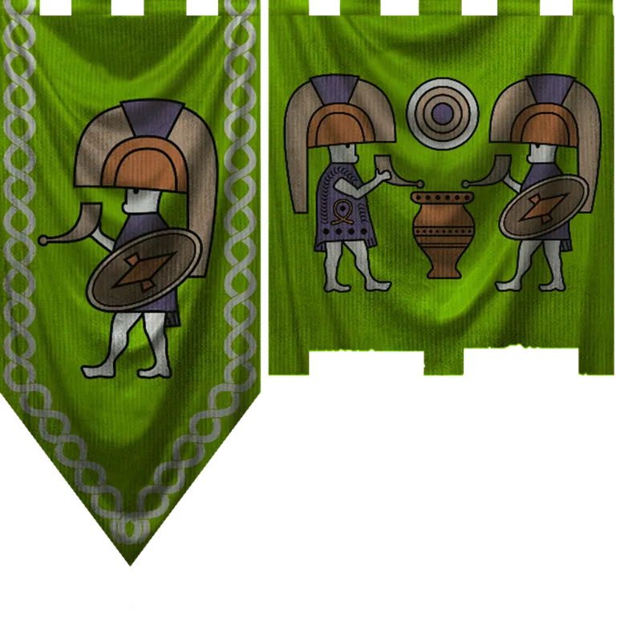
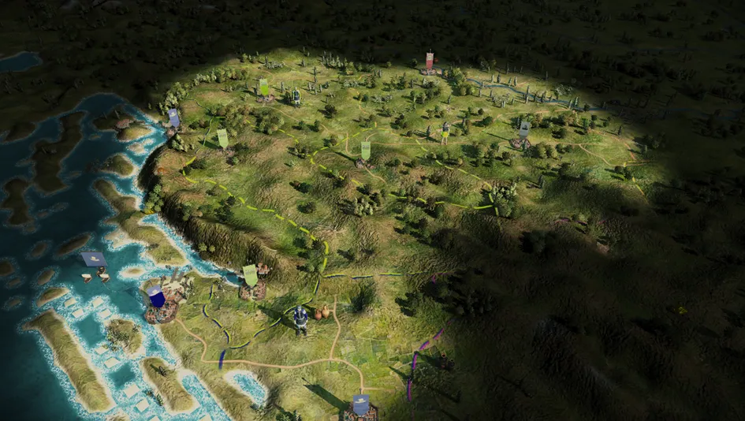
Iapodian Elite Spearmen
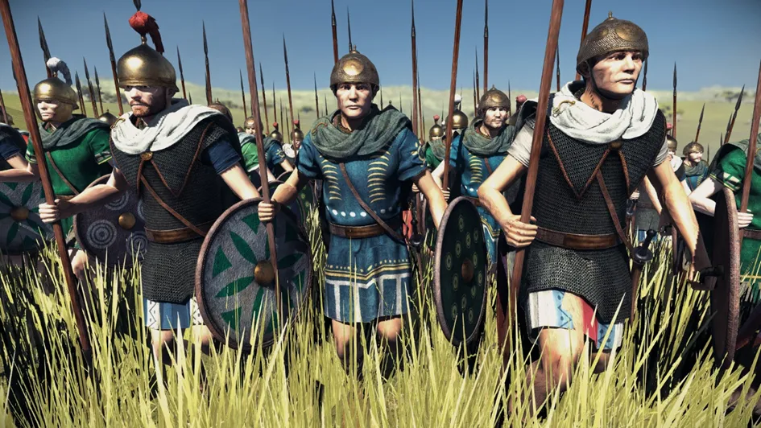
Iapodian Swordsmen
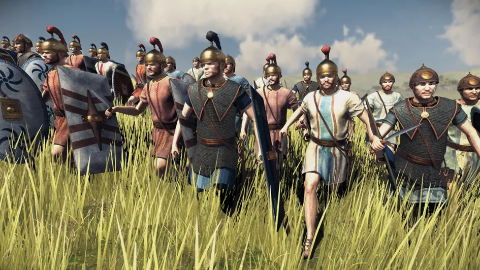
Iapodian Skirmisher Cavalry
Controlling the northeastern coast of the Adriatic Sea are the Liburni, located between the Histrian Arsia and the Titius. The mountain ranges of Učka, Gorski Kotar and Velebit used to separate them from the Iapodes until the latter conquered a significant part of the coastal area. Archaeologically, they are already attested in the tenth century in the northern Dalmatian coast. In the 8th century BC, the Liburnians apparently held a thalassocracy over most of the Adriatic Sea, though this may be exaggeration. In the course of the centuries, their expansion drove them into Picenum, Daunia, and Apulia as well, where traces of their culture were still found even centuries later. They were considered excellent sailors and dangerous pirates, who raided the coastal areas with their small fast liburnae, which were aptly named after them. Their culture, political structure and economy is well attested by the sources: they engaged in livestock breeding, cheese and wool production, fishing, hunting, and agriculture. Some of their divinities were Latra, Sentona, Ica, Anzotica and Medaurus. Liburnian material culture is already attested during the Bronze Age, where they buried their uncremated dead in tumuli graves, a tradition they continued for the next centuries. Expensive jewellery in tombs indicate a wealthy social upper class. Warrior burials with weapons were found dating to the 8th century, but they became far less common thereafter. Pseudo-Scylax claims that their society was governed by women, which at least indicates that women played a much more prominent role in politics and public life, compared to their neighbours, the Greeks, or Italic peoples. They were only Illyrians in the eyes of later Roman administrations that organised the province of Illyria – Pseudo-Scylax, a Greek author of the 4th century BC, and therefore close to the RIS start, explicitly separated then from the Illyrians.
Their current holdings are Tarsaticus, Chersus, Curicum, Athyinites, Apsorrus, Idassa and Scardona. Liburnian hegemony had slowly waned in the centuries following the movement of several peoples like the Umbrians and Gauls in Italy, or the expansion of the Illyrians on the eastern Adriatic coast. Their naval hegemony probably ended in the 4th century BC when they were defeated by the tyrant Dionysos I of Syracuse (r. 405-367 BC), who colonised Issa and its neighbouring islands. By the third century BC, Argyruntum had perhaps already fallen to the Iapodes. The Liburnians also came into conflict with the Delmatae, who advanced towards the coast during the same time. At one point, the Liburnians must have occupied Promona, a fortress that is built in the construction style of the Delmatae, as archaeology has shown. While Gaius Iulius Caesar was campaigning in Gaul, the Delmatae conquered Promona, causing the Liburnians to appeal to the Romans for help. The initial cohorts sent by Rome were destroyed by the Delmatae, who continued the conflict with the Roman Republic for the next decade, until they were subdued by Augustus. At the same time, the Liburni were deprived of their liburnae by Augustus, as they seemingly continued their piracy in the Adriatic, and were likewise conquered in 33 BC. Burnum became a Roman military camp, and Iader a Roman colony.
Novilara stone stele depicting naval combat
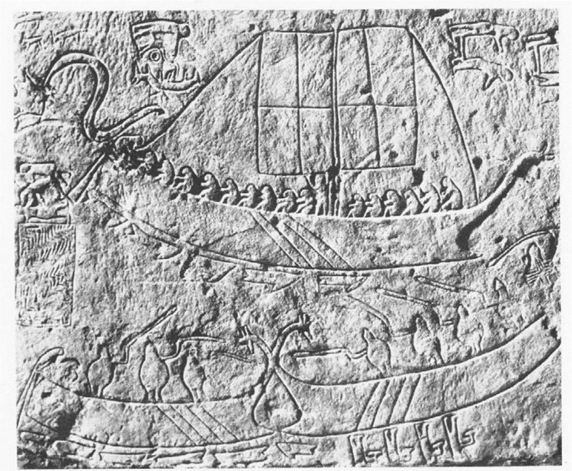
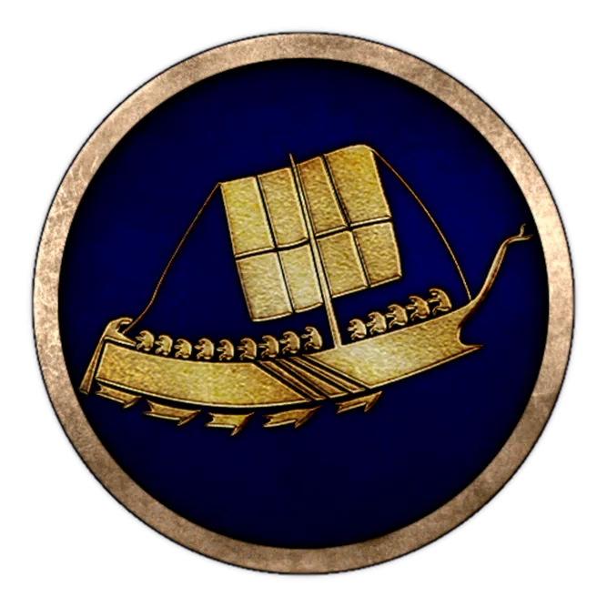
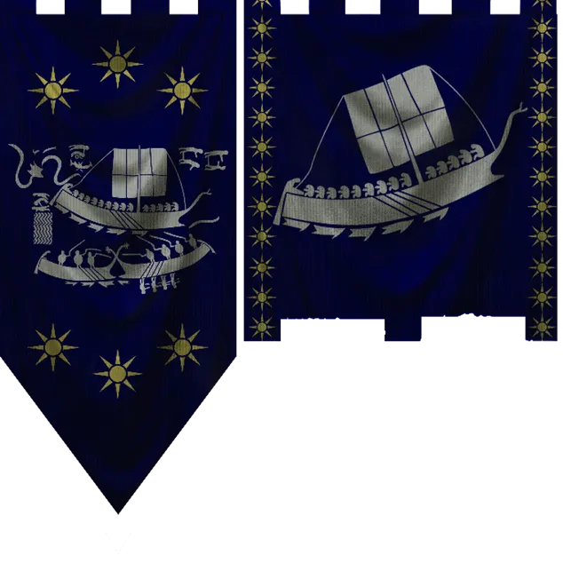
Liburnian Thureophoroi
Liburnian Pirates
Last on our list of individual Illyrian factions are the Histri. The Histri were an Illyro-Venetic people inhabiting the eponymous, Histrian peninsula at least since the 11th century BC. Their forts were built on hills near the coast, securing the access to their lands by sea, especially against their numerous seafaring Illyrian and Italic neighbours. With the latter, the Histri came into early contact, trading as far as Daunia in Southern Italy. Etruscan and archaic Greek influence can be found in Histrian pottery, situla art and stone sculptures, though they were seen by the Romans as “poor people” (gens inops – well, according to the posh boy Livy anyway). They were made up of different tribes like the Menicaleni, the Fecusses, and the Rundictes. Their first contact to Rome likely happened in 221 BC, when their pirates raided Italic merchant vessels. Rome defeated them but did not follow up on their victory to occupy Histria. In 181 BC, however, Rome founded the colony of Aquilea in the Histrian hinterland, which extended Rome’s influence into their territory. The Histrian kingdom was finally conquered in 178/7 BC, with the defeat of their king Epulo, and the destruction of their cities Mutila, Faveria and Nesactium. Rome attached Histria to their Illyrian provice, though in 18/12 BC, the eastern border of Italy was moved further east to the Arsia, which led to the inclusion of Histria into Italy. Thus, the cities of Tergeste and Pola became Roman coloniae under Caesar, Parentium a colonia Iulia under Augustus, and Nesactium a municipium in the 1st century AD.
Situla from a tomb in sanctuary “B” in Nesactium
Histri Swordsmen
Now, at the very end, we will take a look at all the minor Illyrian factions represented by the Illyrians. Again, we will start in the south and work our way up north.
Starting with the area between Epeiros and Illyria, we have two minor but significant tribes, the Amantes and Bylliones. They are already attested in the 4th century BC in a variety of sources though their identity is not always entirely clear. A lot of factors speak for them being Illyrian making them the most Hellenized tribes in Illyria. In their respective capitals of Byllis and Amantia, they minted their own independent coinage until the late 3rd century BC, when they organized themselves as koina and were integrated into the Epeirote League. Both tribes were bilingual, built buildings of Greek culture (theatres, stadiums, temples to Greek gods) and received sacred theoreoi, a sign that diplomatically they were treated as Greeks. Both tribes existed on opposite sides of the Aoos river (modern Vjosa), their land suitable for agriculture as well as livestock breeding on the pastures near the seashore. Several poleis and networks of fortifications were erected on their territories, the city of Nikaia by the Bylliones, and the city of Olympia by the Amantes respectively. In the 2nd century BC both supported Rome against the Illyrian kingdom, though Byllis eventually allied itself to Perseus of Macedon and was thus sacked. Amantia flourished under Roman rule, while Byllis’ destruction led to a decline in size and importance.
Next are the Penestai, a tribe bordering Illyria and Macedon. Located above Lake Lychnidos (Lake Ohrid), the Penestai occupied an important entry point from Illyria into the Macedonian heartland. Their capital of Hyskana was a city of interest to Perseus and the Romans during the Third Macedonian War in the early 2nd century BC, which at the time had 10.000 inhabitants. They were likely relatively powerful, as Livy mentions that they further had 13 fortresses, among them Draudakon and Oainaion. The latter, being of strategic importance to the Labeataians and Macedonians, was eventually captured by Perseus and the male population slaughtered. What happened to the Penestai as peoples thereafter is not really known, though they were likely integrated into Rome’s newly organized provinces after the Macedonian War.
Penestae Axemen
Bordering the Illyrian kingdom to the northeast, the Labeatai to the southeast and the Dardanoi to the west are the Kaouoi. They were a minor Illyrian tribe in the mountainous region east of Skodra that had settled on the left side of the Drilon, in a strategic position between southern Illyria and Dardania. During the Third Illyrian War, they were targeted by king Genthios of the Labeatai, who ordered his brother to take their two cities of Dournion and Karaouandis, the former surrendering, the latter shutting its gate against him. While Genthios’ men were plundering the countryside, they were met by the local peasantry and many of them killed. The quick mobilization of the Romans forced Genthios into a swift surrender. How the Kaouoi were treated after the peace treaty is not clear, since they are not mentioned among Rome’s Illyrian allies and peoples spared by the subsequent pillaging of the Illyrian countryside at the hands of the Romans.
Further northeast we placed the Autariatai, one of the better-known Illyrian tribes. In RIS, we decided to not give them their own faction, due to the political situation they were in by 270 BC, though we wanted to represent them anyway. The Autariatai were once among the most powerful tribes of the Illyrians and likely ruled a large part of the Illyrian inland away from the coast. They are already mentioned by Pseudo-Scylax in the 4th century BC, where they inhabited the hinterland of Narona. Scholarship believes that there the Autariatai fought against the Ardiaei over the salt springs, as mentioned by Strabo. By the time of Alexander the Great they were probably already in decline, as Alexander’s friend and ally Langaros of the Agrianes warns him of an attack by the Autariatai, but adds that they are not particularly warlike. The rise of the Ardiaei and the migration of the Celts into their lands had reduced their strength and holdings in eastern Illyria and they were likely almost completely under the rule of the Skordiskoi by the 3rd century BC. In various anecdotes, their people are found scattered throughout Dardania, Delmatia, Pannonia, the territories of the Skordiskoi, and the remaining settlements north of the Ardiaei. We decided to give them a settlement on the Tara River, which could have been their homeland, where some remaining Autariatai continue their traditional life.
Autariatai Nobles
Autariatai Swordsmen
A minor tribe that accompanied the Ardiaei on their piratic raids were the Plerai. Not much is known of them except that they occupied the coastal strip between the Naro river and Epidauros as well as the peninsula opposite Korkyra Melaina, which encloses the Manios gulf. They were allies of the Ardiaei but were eventually conquered by Rome in the latter half of the 2nd century BC (represented by the settlement on the coast).

Slightly further north, this brings us to the Daorsoi though, a name some Total War players might recognize. They were a minor Illyrian tribe that settled in the hinterland of the Naro river, on a hillfort turned polis called Daorson. They were among the most Hellenized Illyrians, who imported a great number of Greek wares. Their access to the Naro allowed them to participate in Adriatic trade which was represented by ships on their independent coinage. After the fall of the Ardiaeian hegemony, the Daorsoi sought diplomatic connections to the Romans. It was not just the Issaians that were suffering under the Delmataean attacks, but also the Daorsoi, who subsequently sent a delegation to the Romans to ask for help. Shortly before the end of the Third Illyrian War, the Daorsoi, still allied to the Illyrian Kingdom of the Labeatai, quickly switched sides to the Romans and were thus granted immunity and spared the consequences of the post-war pillaging that the Romans conducted throughout Illyria. In the course of the 2nd or 1st century BC they must have lost that immunity as they were conquered by Augustus in 34-33 BC. Thus, they lost near to all significance during the imperial period.
The second to last Illyrian tribe represented by the Illyrians is strictly speaking a Pannonian tribe, called the Breuci. Though not much is known about them, they were probably conquered by the Romans between 12 and 10 BC, but gained notoriety through their participation in the Pannonian revolt of 6-9 AD under Bato and Pinnes. Bato betrayed Pinnes to the Romans and thus got the leadership of the Breuci only to then be murdered by the Daesitatian leader, also called Bato. After the revolt, the Romans recruited heavily from the Breuci and several auxiliary cohorts, the cohorts Breucorum, are epigraphically attested. They were known as brave and strong warriors, which likely made them attractive for conscription in the first place.
Pannonian Cavalry
Pannonian Warband
Last but not least, we have the Segestani, a tribe that inhabited the twin city of Segestica (or Segesta, the trade centre) and Siscia (the fortress). Its significance lied in its position at the confluence of three rivers, which not only made it hard to take in a siege, but also proved beneficial as a trade centre for the Pannonians, as the rivers allowed goods to flow between Italy, Illyria, and Pannonia. Archaeologically, Segestica is already attested during the Bronze Age, and existed continuously throughout the Hallstatt period and the Lat Tène period. The late iron age is marked by the burial of warrior elites in the area, additionally visually depicted on belt buckles, which helped us significantly in the unit-making process. Coin finding point towards good relations with the neighbouring Taurisci, Norici, and Skordiskoi. It was economically and militarily interesting to the Romans. They were confronted by the Segestani already during the 2nd century BC though not much is known of this conflict. Like most of independent Illyria and Pannonia though, it was eventually conquered by Augustus in 35 BC. Strategically, Segestica was in a great position to be the Roman base of operations against the Dacians, who had expanded towards the Roman border on the Danube during the first century BC. Under Vespasian, Segestica was made into a colonia and flourished under Roman rule, especially as a river port city for military and trading fleets.
Vače belt buckle (Slovenia), Archives of the Naturhistorisches Museum in Vienna, which served as an inspiration for the next two units:
Illyrian Axe Cavalry
Illyrian Axemen
Some action shots:
We have divided the new Illyrian factions into several new religions, based on the language groups they belonged to
This concludes our Illyrian preview. Discussions can be had in the a channelas always 🙂

And here the shots of the images in all their higher resolution detail:
Winter wonderland shots:
and just a couple of specific details: 1) La Tene Scabbards
2) Striped elite crests:
3) Some of @Balbor.Valis 's awesome shield patterns:
4) The incredible curved blades of the Iapodian Skirmisher Cavalry:
A final couple of Illyrian preview shots: